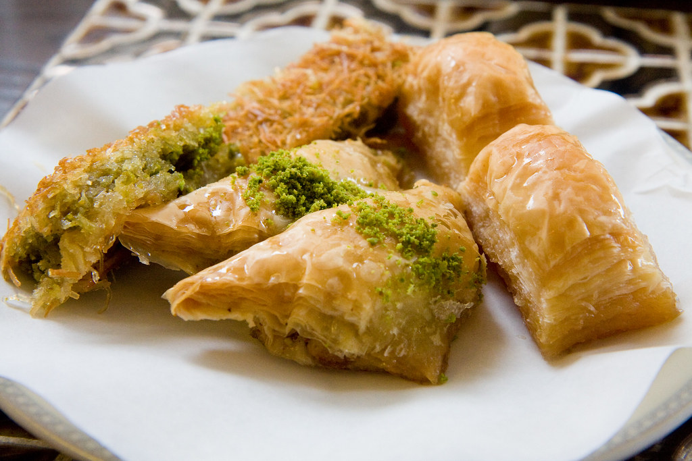

Baklava

What's Baklava?
Baklava is a rich and sweet pastry made with layers of thin, flaky filo dough, filled with finely chopped nuts, and soaked in a fragrant sugar syrup or honey. It is a traditional dessert enjoyed across many Middle Eastern, Mediterranean, and Balkan cuisines, known for its crisp texture and perfectly balanced sweetness.
This dessert is typically prepared by layering sheets of filo pastry with butter, adding a mixture of nuts such as pistachios or walnuts, and baking until golden. Once baked, a sweet syrup infused with lemon or rose water is poured over the hot pastry, allowing it to absorb the flavor while maintaining its delicate crunch. Baklava is often served in small portions, making it a perfect treat to enjoy with tea or coffee.
Ingredients
- Phyllo (filo) dough
- Unsalted butter (melted)
- Chopped pistachios or walnuts
- Sugar
- Water
- Honey
- Lemon juice
- Ground cinnamon (optional)
- Vanilla extract (optional)
Cooking Steps
- Preheat your oven to 180°C (350°F).
- Prepare the syrup by combining sugar, water, honey, and a few drops of lemon juice in a saucepan. Bring it to a boil, then let it simmer for about 10 minutes. Set aside to cool.
- Melt the butter in a small pan.
- Brush a baking dish with melted butter, then lay one sheet of phyllo dough in the dish and brush it with butter. Repeat this process for several layers.
- Sprinkle a layer of chopped nuts evenly over the phyllo.
- Add more layers of buttered phyllo dough, then another layer of nuts. Repeat until all ingredients are used, finishing with several layers of phyllo on top.
- Using a sharp knife, cut the baklava into squares or diamond shapes before baking.
- Bake in the preheated oven for about 30–40 minutes, or until golden and crispy.
- Remove from the oven and immediately pour the cooled syrup evenly over the hot baklava.
- Let it cool completely so the syrup is absorbed, then serve.
Home